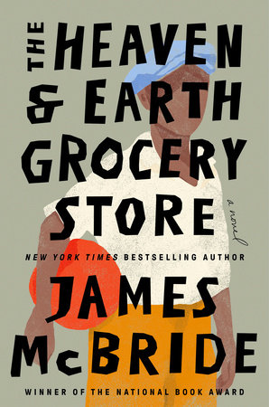

The Heaven & Earth Grocery Store
by James McBride
Awarded as Barnes & Noble Book of the Year!

“We all need — we all deserve — this vibrant, love-affirming novel
that bounds over any difference that claims to separate us.” —The Washington Post
Price:-$28.00 ADD TO CART Buy from Other Retailers:
| Amazon | Barnes & Noble | Books A Million | Bookshop.org | Hudson | Booksellers | Target | Walmart | |